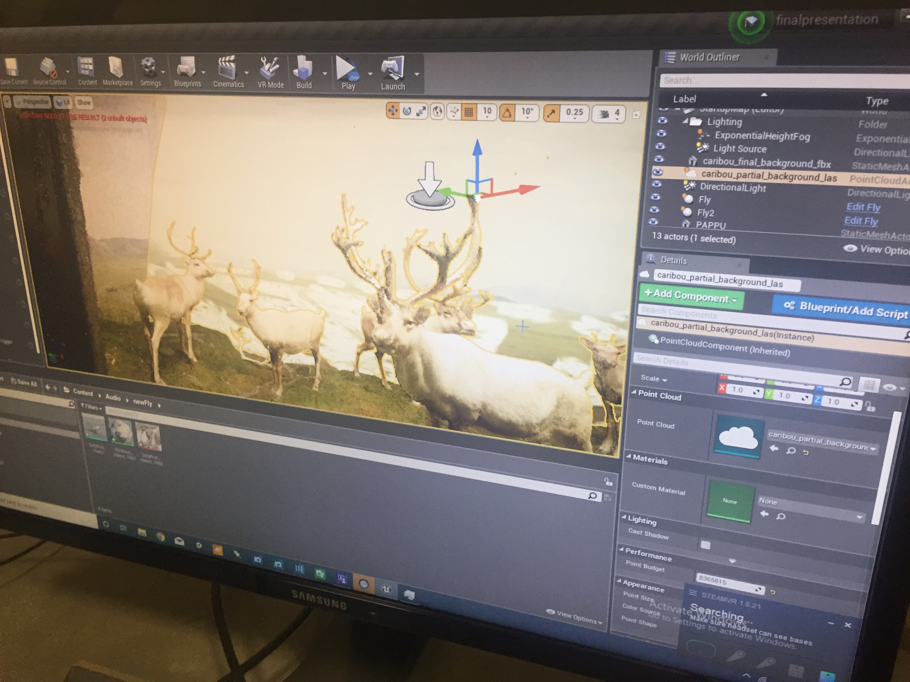
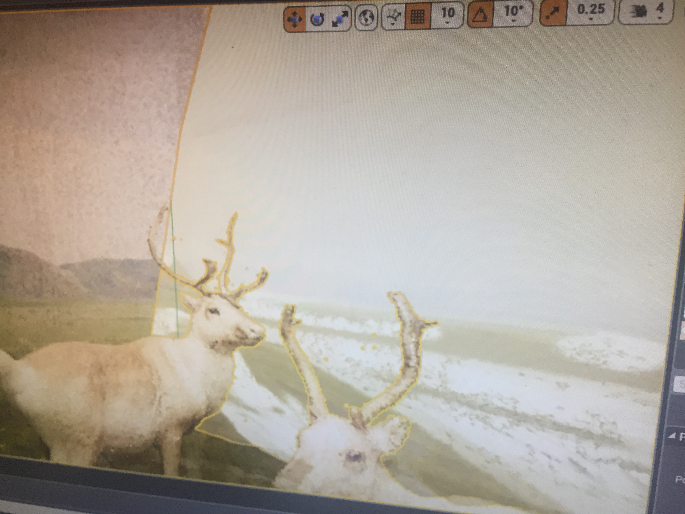

Since this was the week of the final presentation, a significant amount of integration was completed.
Migrated away for camera swapping to background hidding approach. Instead of alternating between cameras, we are hiding a background and making it visible at a certain time interval.
A narrative dialoge was penned and recorded by the team. This narration is triggered when the viewer steps into the caribou diorama.
The narration covers the story of the caribou & flys detailing the shift in balance due to climate change.
The background scene changes from snow to regular at a certain point in the narration.
Apart from changing the background at the time, we also introduce mud and flys. The motivation behind this is to indicate the warmth of the environment.
The below images depect the snow background integrated into the climate change scene. 
